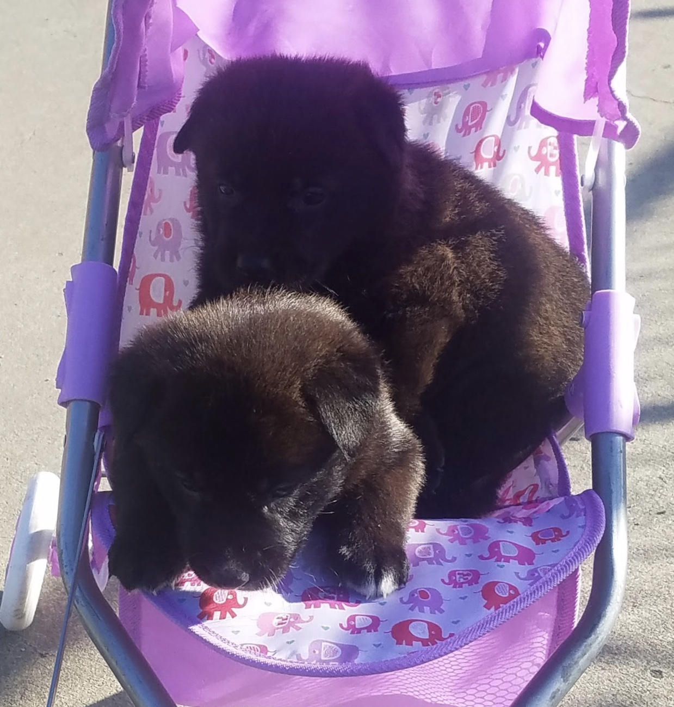
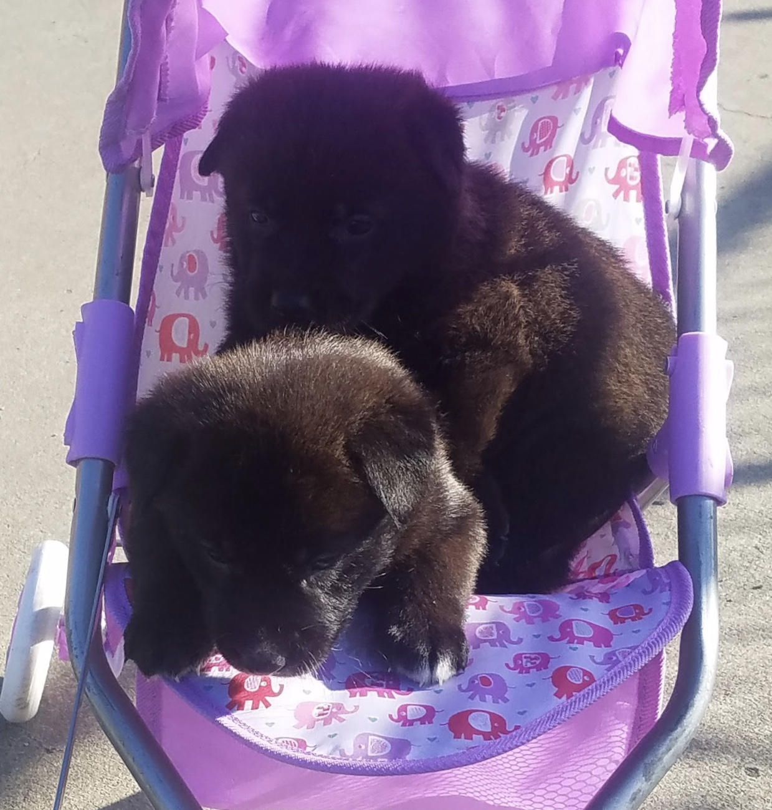

Lola is a 1 year old Labrador/German Shepherd mix. She was born on the summer of 2017. She has thick black fur and a long thick tail. She loves to meet new people. When Lola was a puppy she was really chubby she looked like a baby bear. Lola has always been a calm lazy dog, as a puppy she would sleep way more than her sister. She used to be with her sister but then her sister ran away. Lola got really sad after that incident. Now Lola lives happily at her home in San Jose.
Likes: To play with stuffed toys, squeaky toys, treats, tummy scratches
Dislikes: Loud music coming from speakers
Put Mouse Over Image:

 
